Le démonstrateur couvre déjà les exigences fonctionnelles des sections 4 et 5 des termes de référence. Il est en ligne, testable profil par profil, et fonctionne hors connexion.
Il répond à l'appel à propositions du 16/11/2026 pour une plateforme de formation unique, en ligne et hors connexion. Elle combine un parcours théorique (LMS) et un parcours pratique (LXP) avec certification. Le premier déploiement vise le nord du Bénin : 48 925 comptes, avec une évaluation d'impact par essai contrôlé randomisé mené avec J-PAL. D'autres pays suivront, dont la Suisse.
Le démonstrateur couvre le cœur du MVP 2027. Trois briques restent à livrer : SSO, paiement en ligne et serveurs relais.
| Bloc | MVP 2027 | Version complète 2028-2029 | Démontré aujourd'hui |
|---|---|---|---|
| Modules texte, audio, vidéo, quiz | 6 modules enseignant·es | 12 modules + autres publics | Oui, 17 modules |
| Programmes, classes, calendrier | Oui | Oui | Oui, 6 programmes, 4 classes |
| Test d'entrée et recommandations | Oui | Enrichi par l'IA | Oui |
| 4 niveaux de certification, LinkedIn | Oui | Oui | Oui, PDF JasperReports + QR code |
| Portfolio, vidéo de pratique, mentorat | Oui | Oui | Oui |
| Communautés, forums, visioconférence | Oui | Oui | Oui (Jitsi) |
| Points, classement, lauréat·es | Oui | Oui | Oui |
| Assistant IA | Oui | Oui | Oui (mode local sans clé) |
| Boucle d'amélioration des modules | Analyse des erreurs | Boucle complète | Oui |
| Tableau de bord, exports J-PAL | Oui | Oui | Oui, CSV, JSON, PDF |
| Hors ligne sur l'appareil | Oui | Oui | Oui (PWA) |
| Serveurs relais locaux | Pilote | Généralisé | Spécifié (section 6) |
| SSO (OpenID Connect) | Oui | Oui | Non |
| Catalogue public, inscription, paiement | Oui | Oui | Oui, paiement simulé (Mobile Money, carte, code de licence) |
| Langues de l'interface | Français, anglais | + baatonum, dendi, fongbe | Français, anglais |
Chaque public a son propre rôle, son propre accueil et son propre programme. Les droits se combinent avec la zone géographique et le groupe J-PAL de chaque personne.
| Rôle | Effectif visé (Bénin) | Usage principal | Droits dans la plateforme |
|---|---|---|---|
| Enseignant·e du primaire | 12 000 | Formation initiale certifiante, formation continue, communautés | Suivre son parcours et sa classe, déposer un portfolio, obtenir ses certificats |
| Conseiller·ère pédagogique, formateur·rice | 120 | Animation, mentorat, suivi | Animer ses classes, valider les portfolios de sa zone, suivre les décrocheurs, programmer des visios |
| Direction d'école, cadre du ministère | 2 805 | Formations, suivi des écoles | Suivre sa propre formation et l'équipe de son école (« Mon école ») |
| Parent, éducateur·rice communautaire | 33 600 | Sensibilisation, ressources | Parcours court, fiches pratiques à imprimer ou partager, classement anonyme |
| Assistant·e social·e, animateur·rice | 141 | Formation et suivi | Parcours « Accompagner les familles » |
| Jeune déscolarisé·e | 250 | Remise à niveau, numérique, métiers | Parcours « Rebondir », interface très visuelle et audio |
| Équipe pédagogique (pilotage) | Graines de Paix | Paramétrage, contenus | Tout configurer : domaines, modules, programmes, classes, fiches, groupes J-PAL ; tableau de bord ; supervision IA |
| Administrateur·rice | Graines de Paix | Exploitation | Droits du pilotage + gestion des comptes |
Chaque profil arrive sur un accueil qui lui est propre. La première question n'est jamais « que voulez-vous faire ? » mais « voici la prochaine étape ».
On sait toujours où l'on commence, où l'on en est et où l'on finit. Le parcours suit le modèle des grandes plateformes de formation en ligne.
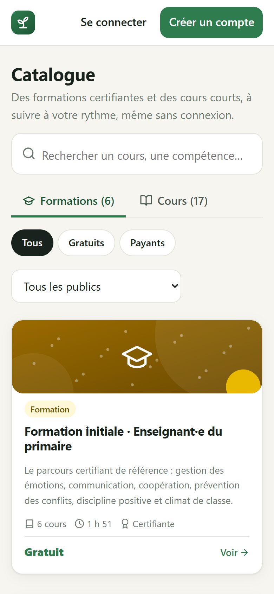
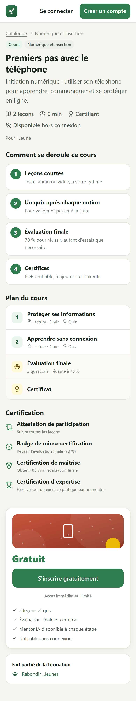
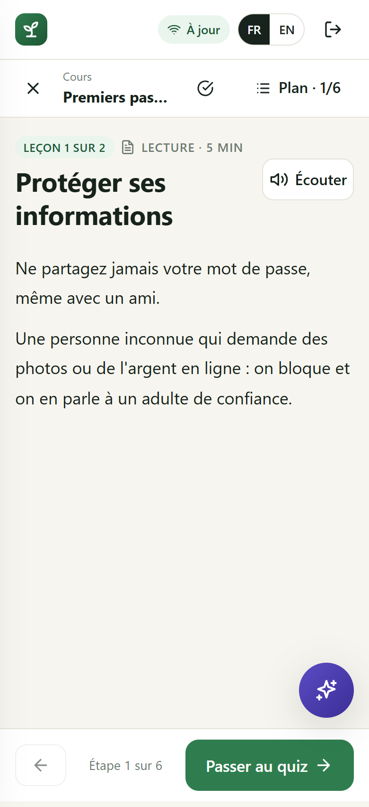
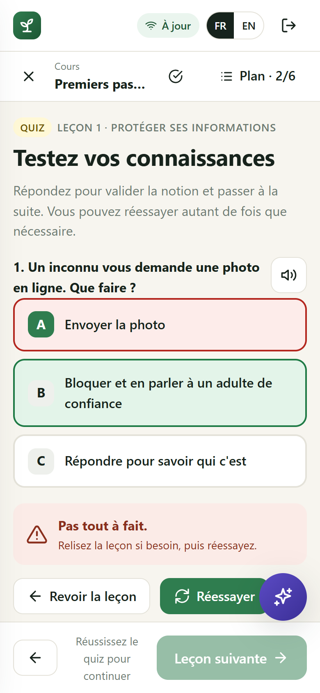
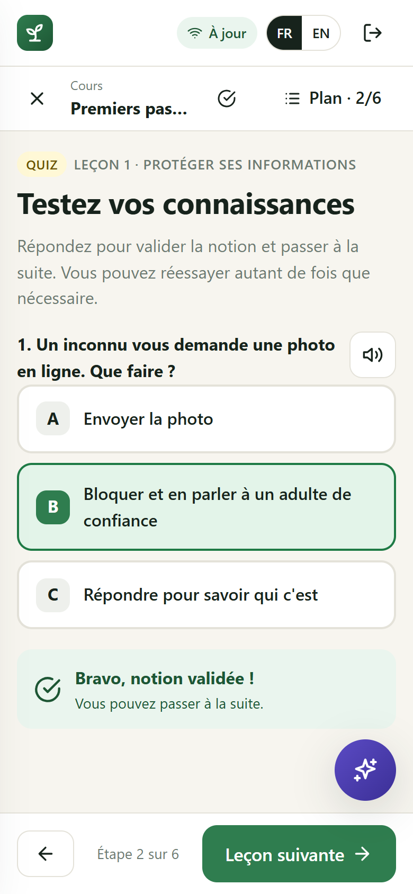
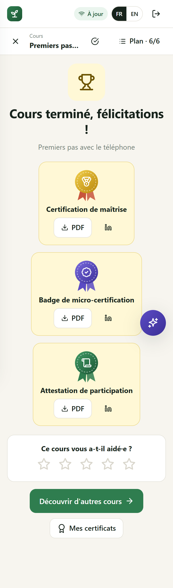
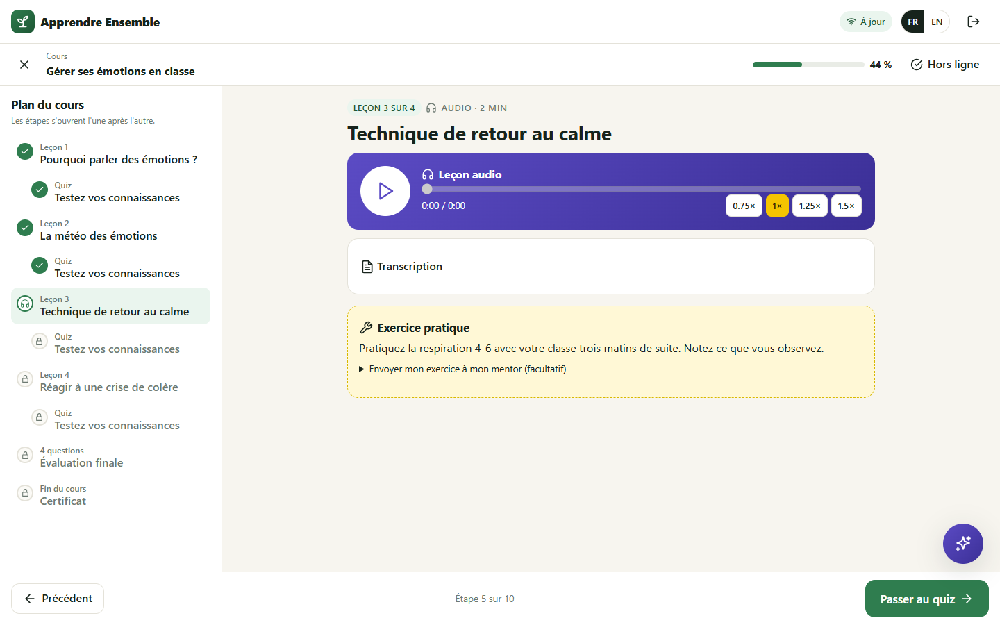
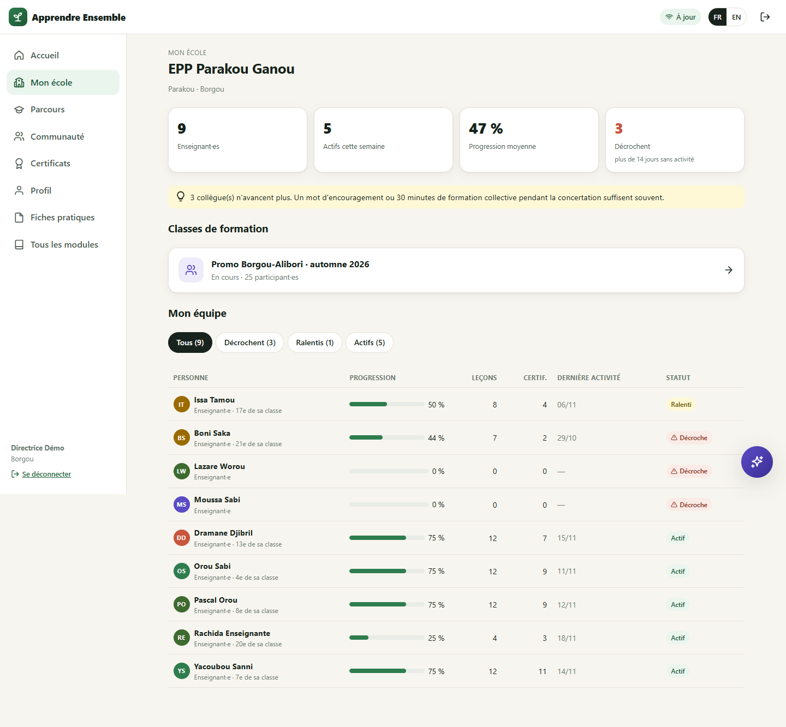
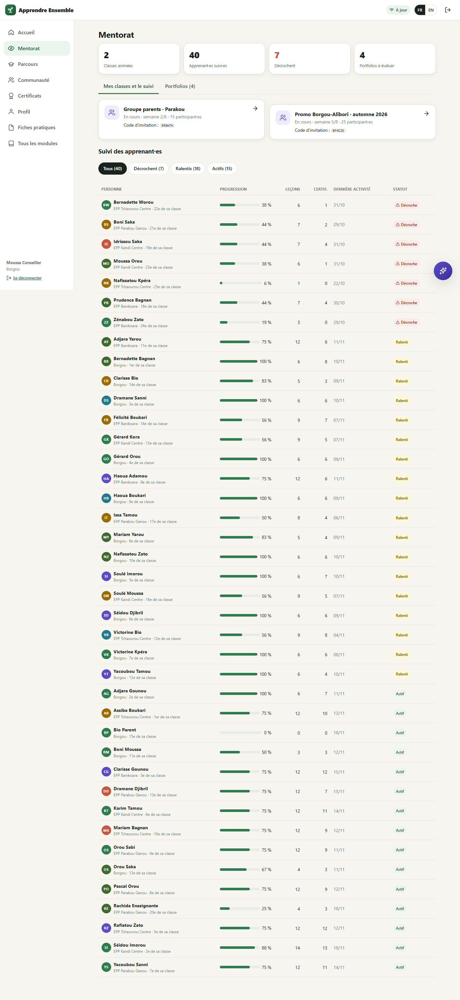
| Objet | Attributs principaux | Contenu de démonstration |
|---|---|---|
| Domaine de compétences | Nom, description, pictogramme, ordre | 6 domaines (climat de classe, relations, protection de l'enfance, famille, numérique et métiers…) |
| Module | Titre, domaine, pictogramme, leçons, évaluation, seuils de réussite et de maîtrise, zones et groupes autorisés, version | 17 modules |
| Leçon | Type (texte, audio, vidéo), média, sous-titres WebVTT, transcription, mise en pratique | Modules 1 et 11 avec vidéo et audio |
| Programme | Modules ordonnés, publics cibles, niveau requis pour le certificat de parcours | 6 programmes |
| Établissement | Nom, commune, zone, pays | 6 écoles du nord Bénin |
| Classe | Programme, dates, animateur·rice, visio, ouverture (hebdomadaire ou totale), barème, classement, code d'invitation, membres | 4 classes |
| Fiche pratique | Titre, résumé, contenu, fichier, domaine, publics | 8 fiches |
| Niveau | Critère par défaut (paramétrable par module) |
|---|---|
| Attestation de participation | Toutes les leçons du module terminées |
| Badge de micro-certification | Évaluation réussie (seuil de réussite, 70 % par défaut) |
| Certification de maîtrise | Seuil de maîtrise atteint (85 % par défaut) |
| Certification d'expertise | Maîtrise + portfolio validé par un conseiller |
| Certificat de parcours | Tous les modules du programme au niveau requis. À la clôture d'une classe, mention « Lauréat·e, 1er sur N » pour le podium qui a terminé le parcours |
Chaque certificat est un PDF généré par JasperReports. Il comporte un code unique, un QR code et une page publique de vérification. Un bouton « Ajouter à LinkedIn » pré-remplit le profil. Le relevé de formation et le rapport de suivi sont aussi produits en PDF.
Dépôt texte (mis en file d'attente hors connexion) ou vidéo de pratique de classe. Statuts : soumis, à reprendre, validé. Le conseiller de la même zone commente et valide. La validation déclenche le niveau Expertise et les points de la classe.
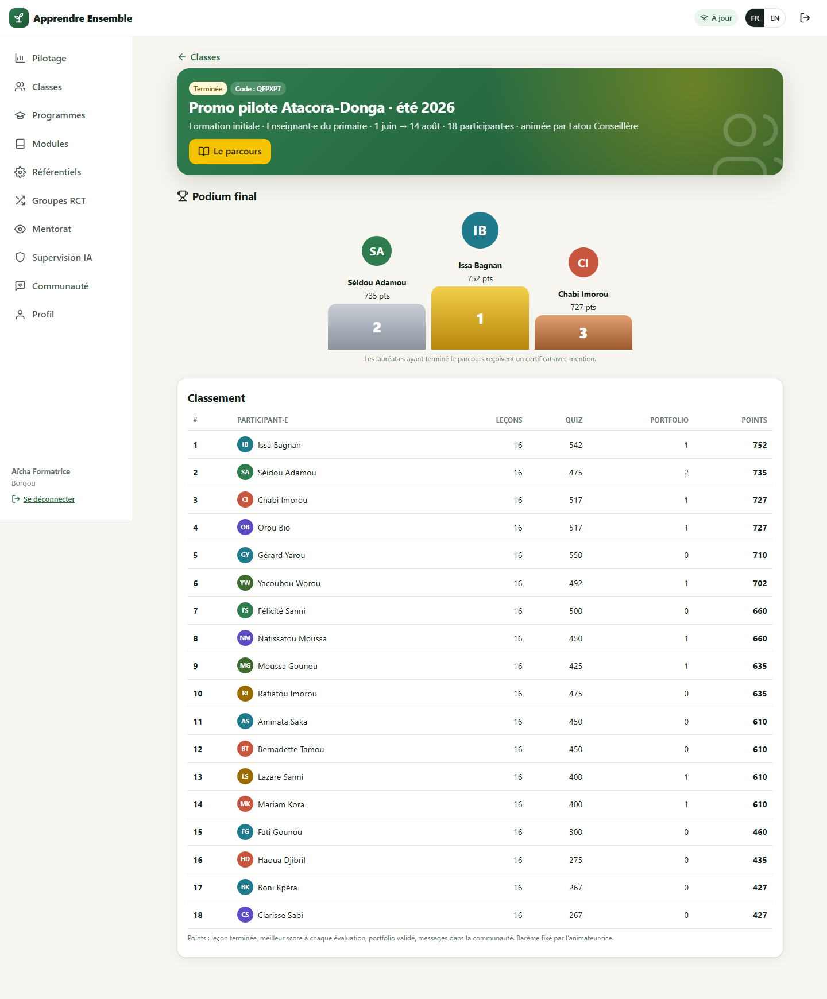
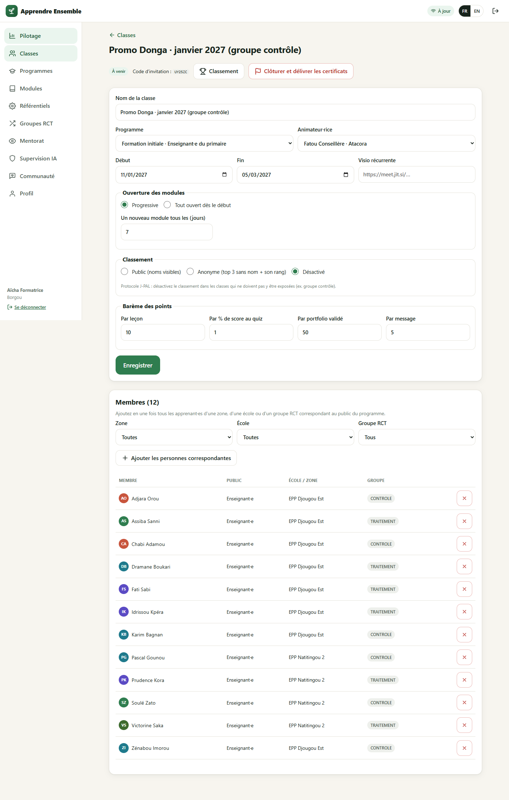
Discussions par pays et par module, réponses, séances de visioconférence (Jitsi) programmées par les animateur·rices et rattachées à une classe.
Complétion, scores, connexions par semaine, abandons, usage hors connexion, temps moyen et médian par module, satisfaction et commentaires. Filtres par pays, zone et groupe J-PAL. Rapport PDF et exports CSV / JSON.
L'appareil est la source de travail ; le serveur est la source de vérité. Tout ce que fait l'apprenant·e est enregistré localement puis envoyé par lots.
| Mécanisme | Fonctionnement |
|---|---|
| Application installable | Progressive Web App : s'installe depuis le navigateur, sans magasin d'applications. Environ 125 Ko au premier chargement, mis en cache par un service worker. |
| Paquet de module | Un module se télécharge en une fois (leçons, questions, médias). Taille affichée avant téléchargement. Stockage IndexedDB et Cache API. |
| File de synchronisation | Leçons terminées, réponses, portfolios texte, retours : mis en file locale et envoyés dès que le réseau revient. |
| Idempotence | Chaque événement porte un identifiant unique. Un renvoi ne crée jamais de doublon. |
| Conflits | Progression : union (une leçon terminée le reste). Score : meilleure tentative conservée. Contenu : la version serveur prime ; l'appareil est averti d'une nouvelle version. |
| Économie de données | Mode « données limitées » : vidéos remplacées par l'audio ou le texte, pas de préchargement. |
| Élément | Proposition |
|---|---|
| Matériel | Mini-PC basse consommation (4 cœurs, 8 Go de RAM, SSD 256 Go) ou Raspberry Pi 5 8 Go, onduleur ou batterie, point d'accès Wi-Fi. |
| Logiciel | La même image Docker que le serveur central, en mode relais. Sert l'application et les médias en Wi-Fi local, sans Internet. |
| Capacité | 200 à 300 utilisateurs simultanés en Wi-Fi local ; 256 Go = plus de 300 heures de vidéo 480p. |
| Bande passante | Seuls les deltas remontent (quelques Mo par jour) ; les contenus descendent par lots, la nuit de préférence, en 3G/4G. |
| Maintenance | Supervision à distance, mise à jour par image, formation d'un référent local par lieu relais. |
Une seule application, un seul code, déployable en central, en relais local ou chez un pays partenaire. Composants open source, standards ouverts.
| Couche | Choix | Raison |
|---|---|---|
| Interface | Angular 22, composants autonomes, signaux, PWA (service worker), IndexedDB | Hors ligne natif, pas de magasin d'applications, un seul code mobile et bureau |
| Serveur | Spring Boot 4.1, Java 21 (threads virtuels), Spring Security 7, JPA / Hibernate | Standard du marché, maintenable par les équipes locales |
| Base de données | PostgreSQL (production), H2 (développement) | Open source, réplicable par pays |
| États PDF | JasperReports 7.1, ZXing pour les QR codes, polices DejaVu | Mise en page professionnelle, modèles modifiables (JRXML) |
| IA | Anthropic Java SDK, modèle configurable (APP_AI_MODEL), sorties structurées | Qualité en français, coût maîtrisé, repli local sans clé |
| Déploiement | Docker (image unique), docker-compose, Railway pour la démonstration | Même image en central, en relais et chez un partenaire |
AppUser (rôle, zone, école, groupe J-PAL) · Domain · Course (module) · Lesson · QuizQuestion · Program (modules ordonnés) · School · Classroom (membres, barème, classement, clôture) · LessonProgress · QuizAttempt · Certificate · ProgramCertificate (rang, points) · PortfolioItem · ForumThread / ForumPost · Resource (fiche) · CourseFeedback · ActivityEvent · AssistantLog · PlacementQuestion.
| Méthode | Route | Accès |
|---|---|---|
| POST | /api/auth/login, /api/auth/register | public |
| GET | /api/courses/{id}/package | apprenant (paquet hors ligne) |
| POST | /api/sync/progress | apprenant (synchro en lot, idempotente) |
| GET | /api/me/programs, /api/me/classrooms, /api/classrooms/{id}/leaderboard | apprenant |
| POST | /api/classrooms/join | apprenant (code d'invitation) |
| GET | /api/school/dashboard, /api/mentor/dashboard | direction, conseiller |
| GET | /api/public/certificates/{code} (+ /pdf) | public (vérification) |
| CRUD | /api/admin/{courses, domains, programs, schools, classrooms, resources} | pilotage |
| GET | /api/admin/export/*.csv, /api/admin/stats | pilotage |
| Exigence | Mesure |
|---|---|
| Authentification | Jeton JWT signé (HS256), mots de passe hachés (BCrypt). SSO OpenID Connect prévu au MVP (Keycloak ou fournisseur du ministère). |
| Autorisations | Contrôle par rôle, zone et groupe J-PAL côté serveur, sur chaque requête. L'interface ne fait que refléter ces droits. |
| Transport | HTTPS uniquement, en-têtes de sécurité, CORS restreint au domaine. |
| Hébergement | Union européenne pour la démonstration (Pays-Bas, europe-west4). Production en Suisse ou dans l'UE au choix de Graines de Paix. |
| RGPD / nLPD | Minimisation (pas de date de naissance, pas de téléphone obligatoire), exports pseudonymisés, droit d'accès et d'effacement, registre des traitements, restitution puis suppression en fin de contrat. |
| Protection de l'enfance | Aucune donnée d'enfant collectée. Vidéos de pratique visibles seulement par l'auteur·e et son conseiller. Le certificat ne contient que le nom du ou de la titulaire. |
| IA : garde-fous | Détection des situations de danger, redirection vers un adulte référent, refus hors sujet, aucune donnée personnelle envoyée au modèle au-delà du prénom et du rôle. |
| IA : supervision humaine | Écran de supervision des conversations signalées. Toute modification de module proposée par l'IA est validée par un humain. |
| IA : coûts | Modèle configurable, effort de raisonnement bas par défaut, réponses courtes, repli local gratuit. Coût suivi par conversation. |
| N° | Exigence | Réponse | Démo |
|---|---|---|---|
| 4.1 | Test d'entrée orientant vers le parcours adapté | Test à pictogrammes et audio, recommandation de modules et de programme | Oui |
| 4.2 | Assistant IA sur tout le parcours | Mentor IA contextuel sur chaque écran, garde-fous, repli local | Oui |
| 4.3 | Modules courts, mises en situation, études de cas, évaluations formatives | Leçons texte / audio / vidéo, mise en pratique, quiz avec explications | Oui |
| 4.4 | 4 niveaux de certification, LinkedIn, critères paramétrables | Attestation, badge, maîtrise, expertise ; seuils par module ; PDF + QR ; LinkedIn | Oui |
| 4.5 | Portfolios et vidéos de pratique, suivi du mentorat | Dépôt texte et vidéo, validation par zone, suivi des décrocheurs | Oui |
| 4.6 | Communautés, forums, visioconférences | Discussions par pays et module, visios Jitsi | Oui |
| 4.7 | Recommandations IA et ajustements issus des erreurs | Boucle d'amélioration avec validation humaine et versions | Oui |
| 4.8 | Tableau de bord analytique | Tous les indicateurs demandés, filtres, rapport PDF | Oui |
| 4.9 | Droits par zone et par groupe (traitement / contrôle) | Restrictions par zone et groupe, tirage stratifié | Oui |
| 4.10 | Export en formats ouverts | CSV, JSON pseudonymisés | Oui |
| 4.11 | Gratuit, licences institutionnelles, abonnements, paiement | Prix par cours et par formation ; gratuit, Mobile Money, carte, code de licence ; agrégateur réel et abonnements en version complète | Partiel |
| N° | Exigence | Réponse | Démo |
|---|---|---|---|
| 5.1 | Hors connexion, synchro différée, serveurs relais | PWA hors ligne, synchro idempotente ; relais spécifié (section 6) | Partiel |
| 5.2 | Téléphone d'entrée de gamme, faible littératie | ~125 Ko, audio, pictogrammes, sous-titres, transcriptions, clavier, contraste, taille du texte | Oui |
| 5.3 | Multilinguisme | Interface FR / EN, contenus par langue ; langues locales au cadrage | Partiel |
| 5.4 | Standards ouverts, portabilité | Exports ouverts, PostgreSQL, Docker, API REST documentée | Oui |
| 5.5 | SSO et sécurité des connexions | JWT + HTTPS ; SSO OpenID Connect au MVP | Partiel |
| 5.6 | Hébergement RGPD / nLPD, protection de l'enfance | UE (démo), Suisse ou UE en production ; protection dès la conception | Oui |
| 5.7 | Montée en charge sans plafond | Serveur sans état, mise à l'échelle horizontale, médias sur stockage objet | Oui |
| 5.8 | Charte graphique, nom de domaine | Thème paramétrable (couleurs, nom, logo), domaine personnalisé | Oui |
| 5.9 | Migration, bien public numérique | Code documenté, une seule image Docker, licence ouverte proposée | Oui |
La démonstration est en ligne. Aucune installation n'est nécessaire : un navigateur récent suffit, sur téléphone ou sur ordinateur.
Mot de passe commun : Demo1234!
| Identifiant | Profil | Ce que vous verrez |
|---|---|---|
formateur@demo.local | Équipe pédagogique (pilotage) | Tableau de bord, classes, programmes, modules, référentiels, groupes J-PAL, supervision IA. Tous les droits de paramétrage. |
enseignant@demo.local | Enseignante (Rachida, Parakou) | Son parcours en frise, sa classe en cours (semaine 5 sur 8), son rang, un module verrouillé jusqu'à sa date, ses fiches. |
conseiller@demo.local | Conseiller (Moussa, Borgou) | Classe en cours, suivi des décrocheurs, portfolios à valider. |
conseillere2@demo.local | Conseillère (Fatou, Atacora) | Promo pilote terminée avec son podium, promo à venir (groupe contrôle). |
direction@demo.local | Direction d'école | « Mon école » : équipe, actifs, progression, décrocheurs. |
parent@demo.local | Parent | Parcours court, classement anonyme, fiches pratiques. |
jeune@demo.local | Jeune déscolarisé·e | Aucune inscription au départ : idéal pour tester catalogue, inscription, paiement et cours complet. |
social@demo.local | Travailleuse sociale | Parcours « Accompagner les familles ». |
apprenant001@demo.local à apprenant074@demo.local | Apprenant·es simulé·es | Membres des 4 classes, avec une activité réaliste. |
Le compte administrateur n'est pas publié dans ce document. Il est communiqué sur demande. Le compte formateur@ donne accès à tout le paramétrage.
Code de licence de démonstration pour les contenus payants : GDP-2027. Les apprenant·es peuvent aussi créer leur propre compte depuis la page d'inscription. Les dates des classes sont calculées à partir du jour de mise en ligne : la classe « en cours » l'est toujours au moment du test.
GDP-2027.Avec Docker : git clone du dépôt, puis docker compose up -d --build. L'application est servie sur http://localhost:8088 avec les mêmes comptes.
Assistant IA : sans clé d'API, il répond en mode local à partir du contenu des leçons. Avec une clé (ANTHROPIC_API_KEY), il utilise le modèle configuré.
| Période | Lot | Contenu |
|---|---|---|
| Déc. 2026 – janv. 2027 | Cadrage | Ateliers avec les équipes au Bénin, choix des lieux relais, charte graphique, maquette validée à partir de ce démonstrateur. |
| T1 – T2 2027 | MVP | SSO OpenID Connect, 6 modules enseignant·es intégrés, serveurs relais pilotes, tests utilisateurs sur téléphones d'entrée de gamme, recette. |
| 2027 | Mise en service | Déploiement pilote nord Bénin, formation des conseillers, support local, collecte J-PAL. |
| 2028 – 2029 | Version complète | 12 modules et tous les publics, paiement et abonnements, langues locales (baatonum, dendi, fongbe), généralisation des relais, nouveaux pays. |